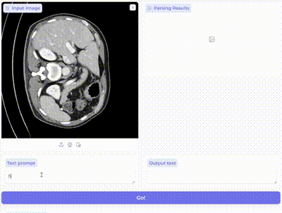
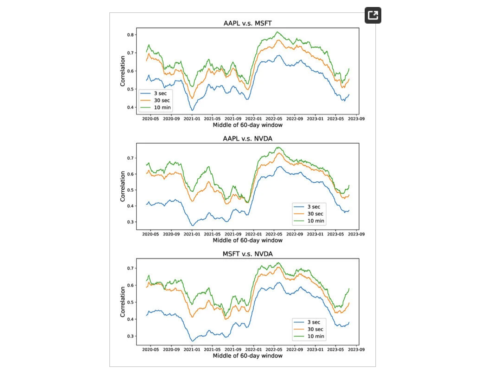

Theodore Zhao
Zhengde Zhao
About Me
I am Theodore (Zhengde) Zhao, a Senior Applied Scientist at Microsoft, Health and Life Sciences Research. Currently, I focus on creating state of the art foundational models for healthcare AI. Some of my recent work includes:
- Large Multimodal Foundation Model: Image Analysis, Segmentation
- Machine Learning: Time Series, Self-Superversion, Error Detection
- LLMs For Healthcare: Cancer Diagnosis and Registration
I received my PhD and Master degree in Applied Mathematics from University of Washington , advised by Prof. Tim Leung. I also worked for Microsoft, Harborview Medical Center, Rotella Capital Management, Parametric as an Intern. Prior to this, I received my Bachelor degree in Physics from Fudan University in China.
News
- [May. 2024] We released BiomedPrase, a biomedical foundation model for image parsing of everything everywhere all at once!
- [May. 2024] Our paper about Pareto Optimal Learning is accepted to ACL 2024, Let's talk in Bangkok!
- [April. 2024] I will be giving a talk at 2024 Joint Statistical Meetings, See you in Portland!
-
Recent Works
-
We propose BiomedParse, a biomedical foundation model for imaging parsing that can jointly conduct segmentation, detection, and recognition for 82 object types across 9 imaging modalities.
-
 ACL, 2024We demonstrate the proposed method can be utilized to increase the performance of an LLM, surpassing state-of-the-art task specific models.
ACL, 2024We demonstrate the proposed method can be utilized to increase the performance of an LLM, surpassing state-of-the-art task specific models. -
 Preprint, 2024We examine the adaptations and integrations of SAM necessary to address longstanding clinical challenges, in the context of 33 open datasets covered in our analysis.
Preprint, 2024We examine the adaptations and integrations of SAM necessary to address longstanding clinical challenges, in the context of 33 open datasets covered in our analysis. -
Mathematics, 2024We analyze the multiscale behaviors of high-frequency intraday prices, with a focus on how asset prices are correlated over different timescales.
-
 The Lancet HIV, 2022We conducted a randomised trial, the Deliver Health Study, of a fee for home delivery of ART compared with free clinic ART delivery in South Africa.
The Lancet HIV, 2022We conducted a randomised trial, the Deliver Health Study, of a fee for home delivery of ART compared with free clinic ART delivery in South Africa. -
 Financial time series analysis and forecasting with Hilbert–Huang transform feature generation and machine learningApplied Stochastic Models in Business and Industry, 2021We present the method of complementary ensemble empirical mode decomposition (CEEMD) and Hilbert-Huang transform (HHT) for analyzing nonstation.
Financial time series analysis and forecasting with Hilbert–Huang transform feature generation and machine learningApplied Stochastic Models in Business and Industry, 2021We present the method of complementary ensemble empirical mode decomposition (CEEMD) and Hilbert-Huang transform (HHT) for analyzing nonstation.FUN
In my free time, I love stargazing and have recently started making some musics.
Here are some of my music — Just a heads-up, you'll really hear sound when you hit play! 🎵
-
For Nora: Entanglement
-
For Parents' 30th Anniversary: Pearl Waltz
-
For Dad: Happy Birthday!
-
For Mom: Happy Birthday!
If my research/music/cat interests you, send me an email! I'm always open to collaborations and discussions.🍺
-
-